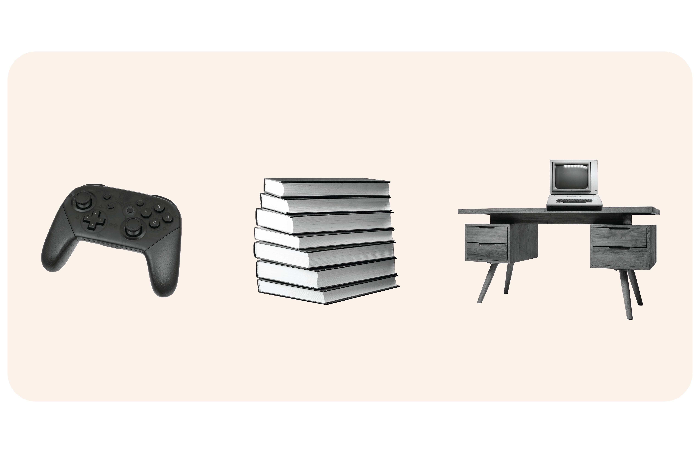

About Third Places
Home
Your home is often defined as your first place- it is the place of your residency and often where family commingles- although community events can occur here, it’s primary function is to house yourself, and your family, and serve personal needs for day-to-day living. Communication is often more of a secondary need within these locations than primary.
Work
Your workplace is often the second primary location an individual spends time at outside of their home. Within this place, the primary goals and functions for it is to generate profit, and collaboration with peers within a professional job setting. Although communication can often be needed in the workplace for functions within an individual's career, it is more focused on fulfilling the individual's career and company needs than fulfilling the individual's leisurely needs.
Third Places
A third place serves as an informal meeting place for communication, community, leisure, or personal growth. Ray Oldenburg, who coined the term third places, stated they serve, "[As] a generic designation for a great variety of public places that host the regular, voluntary, informal, and happily anticipated gatherings of individuals beyond the realms of home and work." Third Places focus on being locations outside of First and Secondary places to be locations of escapism, intellectual conversation, or more equitable places for communication with peers. The rise of the web, social media, and even more recently, Gen AI, as some argue, has led to the decline and diminished popularity of third places existing within one's community. Locations like bowling alleys, independent coffee shops, bookstores, or even community centers continue to be treated as different challenges to the existence of third places. Beyond the blanket statement of tech destroying physical third places, though, more nuance lies in what has continued to fall, but also the need and longevity of these places.